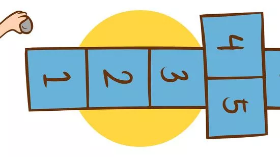
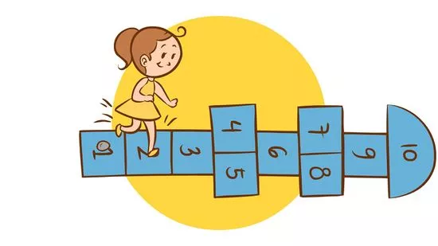
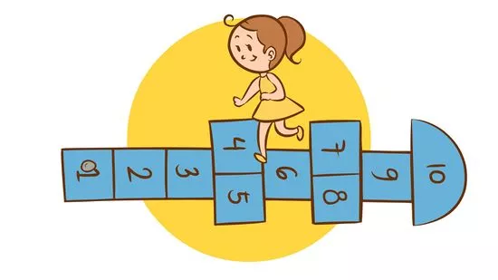
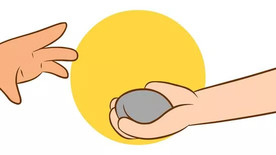
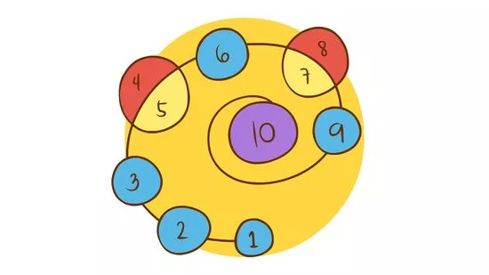
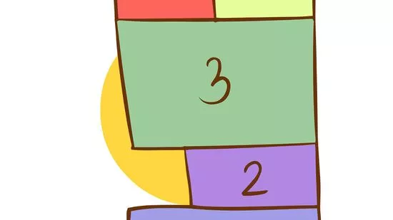
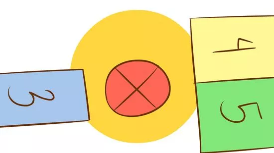
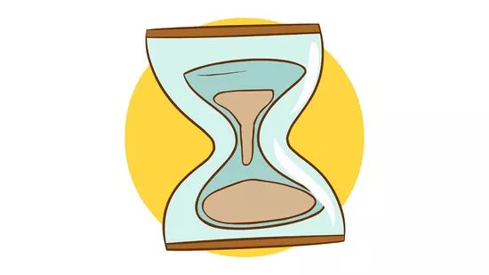

Thousands of years ago, Roman soldiers played hopscotch to test their strength and speed, sometimes hopping over 100 feet (30.5 m) carrying heavy weights![1] Today, hopscotch is a backyard game enjoyed by children (and lighthearted grown-ups) all over the world. Whether you never learned this game as a child, or simply need a brushing-up, you can easily learn to play this classic game, along with some variations to make it more challenging.
Download Instructions
For Saving Instructions Offline Click The Button Below
Chalk is the best drawing medium on asphalt, patio stones or concrete. The squares should be large enough to fit one foot and to make sure that a stone thrown into the square will not bounce out too easily. While there are variants on drawing the design, a common schoolyard design is shown here.
It is common to designate the section shown here as a rest or stop area. This is where the player can take a moment to turn around and/or regain their balance. Sometimes a more creative name, like "Heaven" is given to the space.
2. Throw a flat stone or similar object (small beanbag, shell, button, plastic toy) to land on square one.

It has to land inside the square without touching the border or bouncing out. If you don't get it within the lines, you lose your turn and pass the stone to the next person. If you do get it, however, go on to the next step.
Hopscotch can be played with just one person. If that's your case, make up the rules as you see fit!
3.
Hop through the squares, skipping the one you have your marker on.

Each square gets one foot. Which foot you start with is up to you. You can't have more than one foot on the ground at a time, unless there are two number squares right next to each other. In that case, you can put down both feet simultaneously (one in each square). Always keep your feet inside the appropriate square(s); if you step on a line, hop on the wrong square, or step out of the square, you lose your turn.
4. Pick up the marker on your way back.

When you get to the last number, turn around (remaining on one foot) and hop your way back in reverse order. While you're on the square right before the one with your marker, lean down (probably on one foot still!) and pick it up. Then, skip over that square and finish up.
5. Pass the marker on to the next person.

If you completed the course with your marker on square one (and without losing your turn), then throw your marker onto square two on your next turn. Your goal is to complete the course with the marker on each square. The first person to do this wins the game!
Ashrita Furman holds the Guinness World Record for completing the fastest game of hopscotch, coming in at 68 seconds.[3] In case you were curious.
6. Change the shape of the hopscotch course.

Make it circular, with the numbers going in a spiral direction. Maybe that's why the French call it "escargot?"[8] Or make it a rectangle, triangle, or firework!
It's easiest to start from the middle and go outward. That way you can make it as big as you need -- instead of ending up with your last square being microscopic!
7. Vary the size and shape of the squares.

Make some of them smaller so that people have to step on their tip toes. You can even make some in the shape of a shoe to control the direction in which the person faces. Get creative
8. Make some squares into islands.

That way, a person needs to jump over a distance to get to it. Just make sure the spaces are jump-able! And who said hopscotch didn't require skill?
9. Set a time limit.

Make into a game of "speed hopscotch." The person has a certain amount of time to complete the course, or else they lose their turn. Or you could turn it into a race!